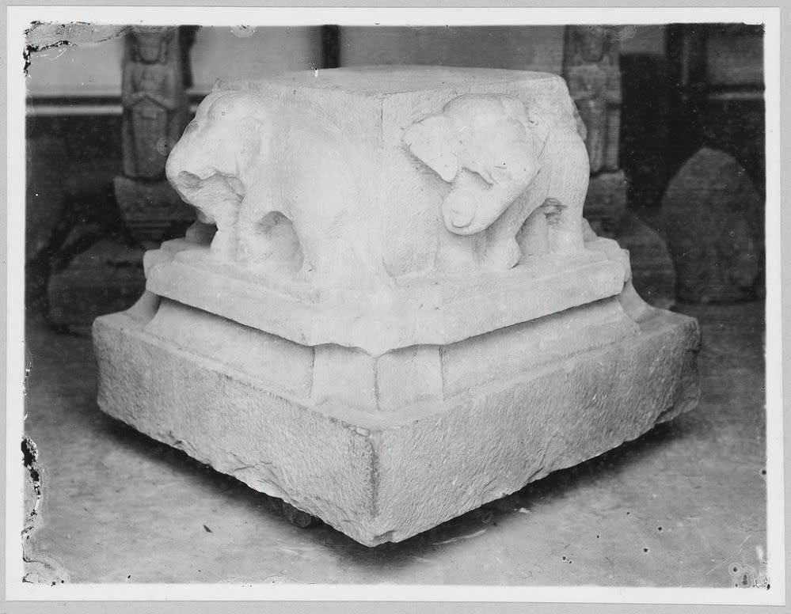
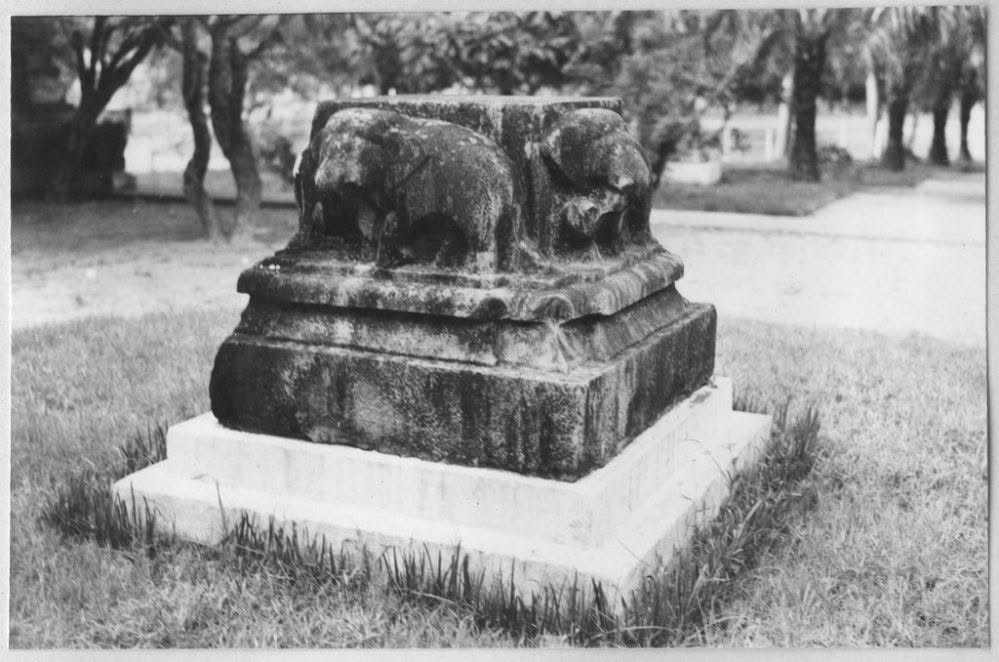
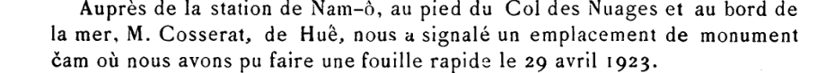
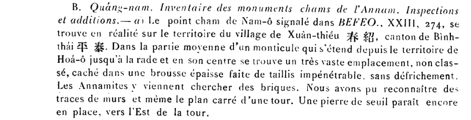

Hồ sơ nghiên cứu Lê Trí Công · Hiệu đính ngày 06/11/2026
Đọc / tải hồ sơ PDF ↗ · Tải bản Word ↗
Xuân Dương cần được đọc từ địa hình trước khi được kể thành một câu chuyện lịch sử. Trong không gian Nam Ô, núi thấp, mỏm đá, cửa sông, bờ biển và đường qua Hải Vân nằm gần nhau. Trên nền ấy, các dấu tích đền tháp Champa, thiết chế làng Việt, công trình giao thông và hoạt động khai thác vật liệu đã lần lượt xuất hiện. Những lớp này có thể chồng lấn về vị trí, nhưng mỗi lớp có niên đại và hệ chứng cứ riêng.
Điểm tựa chắc nhất hiện nay là hai văn bản Pháp năm 1923 và 1928: một địa điểm kiến trúc Chăm gần trạm Nam Ô được đào thám sát nhanh ngày 29/4/1923; đến năm 1928, ghi chép EFEO xác định địa điểm thuộc làng Xuân Thiều, tổng Bình Thái, còn nhận ra dấu tường, bình đồ vuông của một tháp và một đá ngưỡng cửa dường như ở vị trí cũ về phía đông. [1–2] Đây là bằng chứng về di tích kiến trúc, không chỉ là một truyền thuyết về tháp.
Tên Xuân Dương trong nghiên cứu Việt Nam hiện đại được nối với phế tích ấy. Sự tương ứng có căn cứ trong lịch sử nghiên cứu, song ranh làng cũ, vị trí hố thám sát và địa điểm phát hiện bệ đá vẫn cần xác định riêng. Tọa độ trên bản đồ là điểm đại diện do Lê Trí Công cung cấp, chưa thay thế bình đồ hoặc ranh di tích.
| Tên / đối tượng | Cách dùng trong hồ sơ |
|---|---|
| Xuân Dương | Tên hồ sơ di tích theo cách gọi nghiên cứu hiện đại; đồng thời có thể chỉ làng cũ, núi hoặc đình tùy nguồn. |
| Nam-ô / Nam Ô | Chỉ dẫn địa điểm trong văn bản 1923; cần phân biệt nhà trạm, nhà ga và tên vùng. |
| Xuàn-thiêu / Xuân Thiều | Làng được văn bản EFEO 1928 xác định là địa bàn của phế tích. |
| Hoa-ô / Hoa Ổ | Địa bàn dùng làm mốc trong mô tả dải gò năm 1928; không tự đồng nghĩa với toàn bộ Xuân Thiều. |
| Trà Vương | Tên cổ tháp được các nghiên cứu Việt Nam dẫn từ địa chí; chưa xác nhận là thần danh hoặc vương hiệu Champa. |
| Đình Xuân Dương | Thiết chế làng Việt; tuổi đình và tuổi tháp cần được xác lập bằng những chuỗi chứng cứ riêng. |
Trong Notes d’archéologie indochinoise, I–VI, Henri Parmentier ghi rằng Cosserat ở Huế báo cho ông một địa điểm có kiến trúc Chăm, gần station de Nam-ô, dưới chân Hải Vân và bên bờ biển. Đoàn đã thực hiện một fouille rapide ngày 29 avril 1923. Đoạn này ở trang in 274, trang PDF 10 của bản Persée trong corpus. Đã đối chiếu ảnh trang: chữ số là 29, không phải 19. [1]
Dịch sát ý: “Gần trạm Nam Ô, dưới chân đèo Hải Vân và bên bờ biển, ông Cosserat ở Huế đã báo cho chúng tôi một địa điểm kiến trúc Chăm, nơi chúng tôi đã có thể tiến hành một cuộc đào thám sát nhanh ngày 29 tháng 4 năm 1923.” Từ station nên giữ thận trọng khi dịch: nó định vị theo một điểm giao thông đương thời, không mặc nhiên là dịch trạm triều Nguyễn.
Đoạn tiếp theo nhắc những hiện vật vào Musée de Tourane, nhưng gồm nhiều nhóm có xuất xứ khác nhau, trong đó có vật không rõ nguồn gốc. Cú pháp và văn cảnh không cho phép quy tất cả hiện vật ấy cho cuộc đào tại Nam Ô. Càng chưa thể từ đoạn này chốt rằng bệ voi được đưa về bảo tàng ngay ngày 29/4/1923. [1]
Chronique năm 1928, mục “Quảng Nam. Inventaire des monuments chams de l’Annam. Inspections et additions”, điểm a, trang in 596 (trang PDF 55), dẫn đích danh BEFEO XXIII, tr. 274. Đây là mối nối văn bản trực tiếp giữa hai lần ghi chép, chứ không chỉ là hai địa danh được suy đoán giống nhau. [2]
Nội dung cho biết địa điểm thực ra thuộc làng Xuân Thiều, tổng Bình Thái; nằm trong phần giữa một dải gò kéo từ địa phận Hoa Ô ra vịnh. Khu phế tích được mô tả là rộng, chưa xếp hạng, bị cây bụi che phủ; người dân tới lấy gạch. Người khảo sát nhận ra dấu tường và bình đồ vuông của một tháp. Một đá ngưỡng cửa “paraît encore en place”, ở phía đông tháp. [2]
| Chi tiết gốc | Điều có thể rút ra | Giới hạn |
|---|---|---|
| plan carré d’une tour | Nhận diện một bình đồ tháp vuông. | Không có kích thước hoặc bản vẽ mặt bằng trong đoạn này. |
| pierre de seuil | Cấu kiện được nhận là đá ngưỡng cửa. | Không dịch chung thành mọi loại “đá cửa”. |
| paraît encore en place | Người khảo sát nghiêng về khả năng còn tại chỗ. | Không nâng thành “chắc chắn nguyên vị”. |
| vers l’Est de la tour | Gợi ý về phía đông của tháp. | Chưa cho phương vị đo hoặc trục cửa chính xác. |
| chercher des briques | Hoạt động lấy gạch được ghi nhận. | Không đồng nghĩa có mỏ khai thác sa thạch hoặc đốt gạch thành vôi. |
Hai nguồn đủ xác lập lịch sử nhận diện một phế tích Champa. Chúng chưa đủ xác lập một quần thể lớn, tôn giáo cụ thể, ngày xây dựng hay một cuộc “giải cứu bệ voi” năm 1928.
Các bản tổng thuật Việt Nam trong corpus dẫn Đại Nam nhất thống chí, bản Duy Tân thứ 3 (1909), quyển 5 về Quảng Nam, ở mục núi Xuân Thiều có tên “cổ tháp Trà Vương”. Hòa Vang huyện chí cũng được dẫn là có tên này. Chuỗi địa hình được kể gồm núi nổi giữa dải cát, chân phía đông ra biển, mỏm như đầu chim hạc, phía bắc gần cửa Cu Đê và phía tây có đường trạm. [3]
Lớp tư liệu này có giá trị vì đặt cổ tháp vào cảnh quan có thể đối chiếu với mô tả Pháp. Tuy nhiên, nội dung đang được tiếp cận qua tổng thuật và dẫn thuật, chưa phải bản Hán văn đã kiểm từng tờ. Do đó, năm 1909 được ghi là năm ấn bản được dẫn; chưa gọi đó là lần đầu tiên trong lịch sử có văn bản về tháp. Các dạng Xuân Sơn, núi Xuân Thiều, Xuân Dương và Hòn Phụng phải giữ kèm nguồn, không xếp thành một chuỗi đổi tên đã được chứng minh. [3]
Tên Trà Vương có thể là một tên gọi hậu kỳ đối với công trình cổ. Chưa có bi ký tại chỗ được kiểm trong hồ sơ này cho phép giải từ nguyên, xác định vị thần được thờ hay gắn công trình với một vị vua Champa cụ thể. Sự gần nhau giữa tên gọi trong địa chí và phế tích khảo cổ hỗ trợ việc đối chiếu địa điểm; nó không tự chứng minh danh tính chủ thể dựng tháp.
Các thông tin công bố năm 2015 cho biết Viện Khảo cổ học phối hợp với Trung tâm Quản lý Di sản văn hóa Đà Nẵng thám sát tại Xuân Dương. Móng tháp và gạch kiến trúc Chăm được ghi nhận. Tin ngày 27/6/2015 nêu diện tích thám sát 10 m²; diện tích khoảng 500 m² là kiến nghị mở rộng, không phải diện tích đã đào. [4]
Thông tin sơ bộ sau báo cáo ngày 1/7/2015, được Bảo tàng Lịch sử Quốc gia đăng lại ngày 3/7, dẫn nhận định di tích thuộc thế kỷ XI và từng là một trung tâm tôn giáo. Đây là kết luận được thông tin từ đợt nghiên cứu, chưa thay thế hồ sơ địa tầng và lập luận niên đại đầy đủ. [5]
Cần phân biệt niên đại chế tác bệ đá, niên đại xây hoặc sửa móng tháp và thời gian thờ tự. Xác nhận các ảnh cùng một hiện vật giải quyết việc định danh ảnh; niên đại của hiện vật và quan hệ với từng pha kiến trúc vẫn cần căn cứ riêng. Không kéo dài khung “thế kỷ X–XI” để thay thế việc phân tích các pha.
Các tin về khảo sát năm 2015 có cả Khuê Bắc, Xuân Dương và Gò Giản. Vì vậy, những tổng số hàng nghìn hiện vật hoặc diện tích khai quật tại Khuê Bắc không được chuyển sang Xuân Dương. Chỉ ghi vào hồ sơ Xuân Dương dữ kiện được nguồn gắn rõ với chính di tích này.
Có thể ghi chắc rằng Xuân Dương là một phế tích kiến trúc Champa đã được thám sát trong thế kỷ XX và XXI. Khung thế kỷ XI được giữ dưới dạng niên đại do thông tin sơ bộ năm 2015 công bố; việc xác lập pha xây dựng, thời điểm kết thúc và sự liên tục sử dụng vẫn phụ thuộc báo cáo chuyên môn.
Lê Trí Công xác nhận hai bệ voi được bản trước phân thành nhóm A và B thực chất là cùng một hiện vật. Hồ sơ hiệu đính thống nhất hai tập ảnh “Bệ voi Xuân Dương” và “Bệ Voi Nam Ô 23.12” thành một hồ sơ bệ voi; không dùng khác biệt góc chụp, điều kiện ánh sáng và trạng thái trưng bày để suy thành hai hiện vật. Xác nhận này được ghi nhận ngày 06/11/2026. [6]
| Chuỗi ảnh của một hiện vật | Thông tin có thể dùng | Việc còn cần kiểm |
|---|---|---|
| Ảnh ở vách đào và ảnh cận bệ | Là những ảnh của cùng bệ voi theo xác nhận Lê Trí Công ngày 06/11/2026. | Thời điểm chụp, địa điểm công trường, quá trình phát hiện và di chuyển. |
| Ảnh ngoài sân và DSC_0685, DSC_0688 | Được nối vào cùng hồ sơ hiện vật; một phần nhãn trong DSC_0685 ghi thế kỷ VII–VIII. | Đọc toàn nhãn, đối mã kiểm kê, số đo và lịch sử trưng bày; chưa chốt niên đại chỉ từ mảnh nhãn. |
 |  |
Hình 1–2. Cùng một bệ voi qua hai ảnh tư liệu. Việc đồng nhất hiện vật theo xác nhận của Lê Trí Công ngày 06/11/2026; tác giả và thời điểm chụp từng ảnh chưa được xác lập. [6]
Bản tổng thuật cũ gắn bệ voi với kích thước 80 × 107 × 107 cm, chức năng bali-pīṭha, phong cách Mỹ Sơn A1 và nửa sau thế kỷ X. Việc xác nhận cùng một hiện vật không tự xác nhận toàn bộ cụm thông số này: số đo, cách định chức năng và niên đại cần được đối chiếu với mã kiểm kê và công bố có định vị trang. Phần nhãn nhìn thấy trong ảnh DSC_0685 có ghi thế kỷ VII–VIII; cần đọc trọn nhãn và đối chiếu lịch sử trưng bày trước khi chọn một niên đại. Hai đoạn Pháp 1923–1928 đã kiểm không mô tả bệ voi hoặc cung cấp các số đo trên. [1–3; 6]
Bệ được ghi thống nhất là “bệ đá chạm voi gắn với hồ sơ Xuân Dương–Nam Ô”. Các ảnh được quản lý như những lần ghi hình của cùng hiện vật; lịch sử phát hiện, di chuyển và nhập kho cần bổ sung bằng chứng từ bảo tàng. Chức năng đặt lễ vật là một cách giải thích được dẫn lại, chưa xác lập vị trí nguyên thủy trong sân tháp. Voi trên bệ chưa đủ xác định riêng Śiva giáo, thành phần người hành lễ hoặc nghi thức đi vòng.
Địa hình hiện tại không giữ nguyên cảnh quan mà địa chí và Parmentier đã thấy. Hồ sơ giao thông lập ngày 28/10/2026 đã phân biệt việc sửa đường qua Hải Vân, xây tuyến đường sắt, thi công cầu Cu Đê và lấy vật liệu thời chiến. Phân biệt này cần được giữ trong hồ sơ Xuân Dương. [7]
| Thời gian | Chứng cứ đang có | Ý nghĩa đối với Xuân Dương |
|---|---|---|
| 1885–1888 | Jullien kể việc khảo sát và sửa tuyến đường qua Hải Vân; nguồn hồi cố 1942. | Cho bối cảnh hành lang Nam Ô–Hải Vân; chưa định ngày riêng vết cắt tại Xuân Dương. |
| Thành Thái; đầu thế kỷ XX | Địa chí được dẫn có việc đào núi để đắp đường sắt; báo cáo công chính ghi tuyến Huế–Tourane. | Hỗ trợ có can thiệp giao thông; chưa cho khối lượng đất đá hay ranh cắt. |
| 1906 | Các dẫn thuật có ngày mở khai thác 15/11 và mốc tháng 12. | Phải tách mở khai thác với lễ khánh thành; không dùng một ngày cho mọi công đoạn. |
| 1923–1928 | Thám sát và ghi nhận lấy gạch tại phế tích. | Cho biết kiến trúc đã bị xáo trộn; chưa chứng minh toàn bộ do công trường đường sắt. |
| 1950 | Ảnh thi công cầu Nam Ô trong hồ sơ lưu trữ Eiffel. | Là một lần thi công giữa thế kỷ XX; không xác nhận người thiết kế cầu ban đầu. |
| Thập niên 1960 | Ký ức địa phương kể lấy đất đá phục vụ sân bay. | Tách khỏi lần mở tuyến thời Pháp; các mốc 1964 và 1965–1966 cần đối kiểm. |
Về mặt kỹ thuật, cắt sườn núi để đặt tuyến, đào nền đường, khai thác đá dăm cho nền ray và lấy đất đá san nền là những công việc khác nhau. Chúng có thể để lại các mặt cắt gần nhau, nhưng không có cùng niên đại và tác động tới di tích. Một bệ nằm dưới vách đào trong ảnh không tự xác nhận đó là công trường đường sắt, mỏ ballast hay nơi lấy vật liệu sân bay.
Cũng cần tách lấy gạch cổ khỏi khai thác đá tự nhiên. Lời ghi năm 1928 nói người dân tìm gạch tại phế tích, không nói họ nung gạch thành vôi, cũng không khẳng định một cơ sở khai thác sa thạch tại đây. Chưa có căn cứ gán trách nhiệm phá toàn bộ tháp cho một tác nhân hoặc một đợt thi công duy nhất. [2]
Mô tả gò kéo ra vịnh, ngưỡng phía đông và vị trí gần cửa sông cho một bộ ràng buộc không gian hữu ích. Muốn chuyển thành mặt bằng cần đối chiếu bản đồ trước và sau đường sắt, ảnh tư liệu, vị trí hố thám sát 2015 và địa chính. Bản đồ khác tỷ lệ không được dùng để đo phần núi mất bằng mắt; bờ biển hiện đại cũng không mặc nhiên là bờ biển thời xây tháp.
Một tháp ở gần biển có thể tạo dấu mốc nhận biết từ mặt nước. Đó là khả năng phù hợp với địa hình, nhưng khác với việc chứng minh nó được xây và vận hành như một hải đăng. Hai văn bản Pháp đã kiểm không ghi chiều cao tháp, thiết bị đốt lửa, ca trực, tên gọi hàng hải hoặc chức năng dẫn thuyền. [1–2]
Vì vậy, câu diễn đạt nên là: “Tháp có thể từng là một mốc thị giác trong cảnh quan hàng hải; chức năng dẫn đường và nghi lễ của cộng đồng đi biển là những hướng giải thích cần kiểm thêm.” Nếu dùng từ hải đăng trong giới thiệu phổ thông, cần ghi rõ đó là cách diễn giải của một số nghiên cứu, chưa phải công năng đã được xác lập bằng dấu tích chuyên biệt. [3]
Để phân biệt khả năng, có thể phục dựng khoảng chiều cao từ nền móng và loại hình đối sánh, rồi kiểm tầm nhìn từ các tuyến vào cửa Cu Đê theo nhiều mức bờ biển và thảm thực vật. Kết quả nhìn thấy chỉ xác nhận khả năng làm mốc. Muốn đi tới chức năng vận hành phải có thêm dấu tích hoặc tư liệu về hoạt động. Tương tự, chứng cứ có nghi lễ không tự cho biết người hành lễ là ngư dân hay thương nhân.
Đình Xuân Dương là một địa điểm của đời sống cộng đồng Nam Ô, có lịch sử xây dựng, sửa chữa và nghi lễ riêng. Bài điền dã năm 2018 ghi lại quan sát và lời kể tại đình về những lần trùng tu, việc đào được đá Chăm và câu chuyện bảo vệ khu núi. Những thông tin ấy có giá trị đối với lịch sử ký ức và sử dụng lại vật liệu; niên đại từng lần vẫn cần đối chiếu văn bản hoặc cấu kiện còn lại. [8]
Sự hiện diện của gạch hay sa thạch Chăm trong một miếu hoặc đình không tự chứng minh công trình sau xây đúng lên nền tháp, cũng không chứng minh tín ngưỡng truyền liên tục qua nhiều thế kỷ. Phải phân biệt vật liệu được chuyển tới với nền kiến trúc tại chỗ. Các tên thần trong thực hành hiện đại cần ghi theo thời điểm, người cung cấp và bài vị; không hồi chiếu ngay thành thần chủ của tháp Champa.
| Mệnh đề | Kết luận trong phạm vi đã kiểm | Căn cứ |
|---|---|---|
| Có di tích kiến trúc Champa ở khu vực. | Được hỗ trợ bằng ghi chép khảo cổ và thông tin thám sát. | [1–2], [4–5] |
| Ngày đào nhanh là 19/4/1923. | Sửa thành 29/4/1923. | Ảnh trang 274 [1] |
| Địa điểm năm 1928 thuộc Nam Ô. | Ghi đúng đính chính: làng Xuân Thiều, tổng Bình Thái. | Trang 596 [2] |
| Tháp có bình đồ vuông. | Được người khảo sát nhận diện; chưa có kích thước trong đoạn dẫn. | [2] |
| Ngưỡng chắc chắn nguyên vị, cửa hướng đông chính xác. | Thu hẹp: đá ngưỡng dường như còn tại chỗ, về phía đông. | [2] |
| Tháp được xây ở thế kỷ XI. | Là niên đại được thông tin sơ bộ 2015 dẫn; cần hồ sơ pha xây. | [5] |
| Hai ảnh bệ voi từng được chia nhóm A và B. | Thống nhất thành một hiện vật theo xác nhận của Lê Trí Công ngày 06/11/2026. | Xác nhận Lê Trí Công; [6] |
| Bệ voi được chuyển về năm 1928. | Chưa xác nhận; hai đoạn Pháp không cung cấp sự kiện ấy. | [1–2] |
| Tháp là một hải đăng. | Giữ như giả thuyết chức năng hoặc mốc thị giác. | Đối kiểm [1–3] |
| Toàn bộ núi bị phá khi làm đường sắt 1906. | Không đủ căn cứ; phải tách nhiều đợt can thiệp. | [7–8] |
Thứ nhất, đối mã kiểm kê, toàn bộ nhãn và lịch sử sưu tập của bệ voi với chuỗi ảnh tư liệu đã được xác nhận cùng một hiện vật. Mục tiêu hiện nay là kiểm số đo, chức năng, niên đại, thời điểm phát hiện và những lần di chuyển. Xác nhận của Lê Trí Công giải quyết sự đồng nhất giữa hai ảnh, còn hồ sơ nhập kho và công bố gốc sẽ làm rõ lịch sử hiện vật.
Thứ hai, đưa bình đồ, nhật ký và ảnh hố thám sát 2015 lên cùng nền địa hình với vị trí đình, miếu và vùng phế tích được mô tả năm 1928. Mục tiêu là kiểm sự đồng nhất địa điểm, không chỉ tìm một hình thế trông giống mô tả. Ranh tháp, ranh núi và ranh bảo vệ phải là những lớp riêng.
Thứ ba, mở bản Hán văn đúng ấn bản của Nhất thống chí và Hòa Vang huyện chí, đồng thời truy hồ sơ công trình hoặc ảnh bay để tách các đợt cắt núi. Khi có các tài liệu này, mới xem xét lại niên đại ghi chép sớm nhất, quan hệ các tên núi và tác động của từng công trường.
Xuân Dương có giá trị như một phế tích Champa trong cảnh quan cửa Cu Đê đã trải qua nhiều lớp sử dụng và biến đổi. Ghi chép Pháp xác lập lịch sử nhận diện di tích; thông tin thám sát hiện đại bổ sung chứng cứ kiến trúc; chuỗi ảnh cùng một bệ voi mở hướng nghiên cứu lịch sử hiện vật. Công năng của tháp, niên đại từng pha và quan hệ giữa hiện vật với nền kiến trúc cần tiếp tục kiểm bằng các nguồn chuyên biệt.

Trích ảnh trang in 274, PDF 10. Nguồn [1]. Chữ số ngày thám sát là 29.
Dịch: Gần trạm Nam Ô, dưới chân đèo Hải Vân và bên bờ biển, ông Cosserat ở Huế đã báo cho chúng tôi một địa điểm kiến trúc Chăm, nơi chúng tôi đã có thể tiến hành một cuộc đào thám sát nhanh ngày 29 tháng 4 năm 1923.

Trích ảnh mục B.a, trang in 596, PDF 55. Nguồn [2].
Dịch: Địa điểm Chăm ở Nam Ô được báo trong BEFEO XXIII, trang 274, thực ra nằm trên địa phận làng Xuân Thiều, tổng Bình Thái. Ở phần giữa một dải gò kéo từ địa phận Hoa Ô ra vịnh, tại trung tâm gò là một khu vực rất rộng, chưa xếp hạng, ẩn trong cây bụi dày đặc, rậm rạp khó xuyên qua, chưa phát quang. Người An Nam đến đây lấy gạch. Chúng tôi đã có thể nhận ra những dấu tường, thậm chí bình đồ vuông của một ngôi tháp. Một đá ngưỡng cửa dường như vẫn còn tại chỗ, về phía đông của tháp.
Hai bản dịch làm việc giữ mức chắc của nguyên văn. “Très vaste” là nhận xét định tính, không phải số đo diện tích; “paraît” biểu thị sự dè dặt của người khảo sát.
Parmentier, H. (1923). Notes d’archéologie indochinoise, I–VI. BEFEO 23, tr. 267–300; đoạn Nam Ô: tr. 274, PDF 10. DOI 10.3406/befeo.1923.5934. Mở nguồn ↗
Đã đọc văn bản và đối chiếu ảnh trang gốc; ngày thám sát là 29/4/1923.
Chronique (1928). BEFEO 28(3), tr. 549–663; mục Quảng Nam, điểm a, tr. 596, PDF 55. DOI 10.3406/befeo.1928.3159. Mở nguồn ↗
Đã đọc chữ và ảnh trang; địa điểm thuộc làng Xuân Thiều, tổng Bình Thái; đá ngưỡng dường như còn tại chỗ.
Các bản tổng thuật Khảo cổ Pháp tại Nam Ô và Báo cáo khảo cổ phế tích Chăm Nam Ô từ tài liệu tải lên, trong hồ sơ nghiên cứu Lê Trí Công.
Chỉ mục nguồn và đối tượng hiệu đính; không tính là nguồn lịch sử độc lập. Dẫn địa chí và Boisselier chưa đối chiếu đủ trang bản gốc.
Đà Nẵng phát hiện di tích đền tháp Chăm ở làng Nam Ô. Giáo dục và Thời đại, 27/6/2015, ghi theo Dân trí. Mở nguồn ↗
Tin về thám sát 10 m²; 500 m² là kiến nghị mở rộng. Địa chỉ Hòa Hiệp Bắc trong tin khác các nguồn ghi Hòa Hiệp Nam.
Đà Nẵng: Nhiều phát hiện mới về văn hóa Sa Huỳnh, Chăm-pa. Bảo tàng Lịch sử Quốc gia, 3/7/2015; nguồn vanhoa.gov.vn. Mở nguồn ↗
Tin thuật báo cáo sơ bộ ngày 1/7/2015; thế kỷ XI là niên đại được thông tin sơ bộ dẫn, chưa thay báo cáo địa tầng.
Tập ảnh Bệ voi Xuân Dương và Bệ Voi Nam Ô 23.12, hồ sơ nghiên cứu Lê Trí Công.
Lê Trí Công xác nhận ngày 06/11/2026 hai ảnh từng chia nhóm cùng chụp một bệ voi; thống nhất một hồ sơ hiện vật. Niên đại, số đo, mã kiểm kê và lịch sử sưu tập vẫn cần đối chiếu riêng.
Mở đường qua Nam Ô và biến đổi núi Xuân Dương. Hồ sơ nghiên cứu ngày 28/10/2026, 5 trang.
Hồ sơ tổng hợp trước; dùng đầu mối tư liệu giao thông, chưa đối chiếu lại toàn bộ bản gốc Jullien, Doumer và công chính trong vòng này.
Tr. Trung – Đ. Cường. Chuyện làng cổ Nam Ô: Thờ Tổ quốc. Tuổi Trẻ, 4/4/2018. Mở nguồn ↗
Bài phỏng vấn/điền dã; tách lời kể khỏi sự kiện được xác minh độc lập.